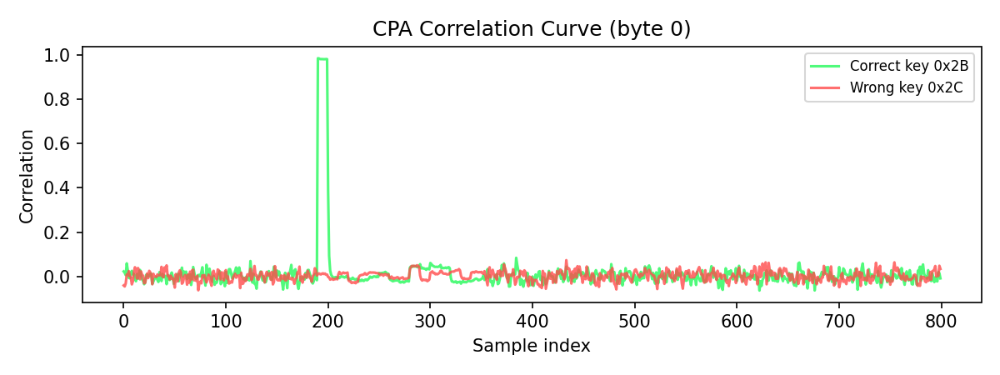
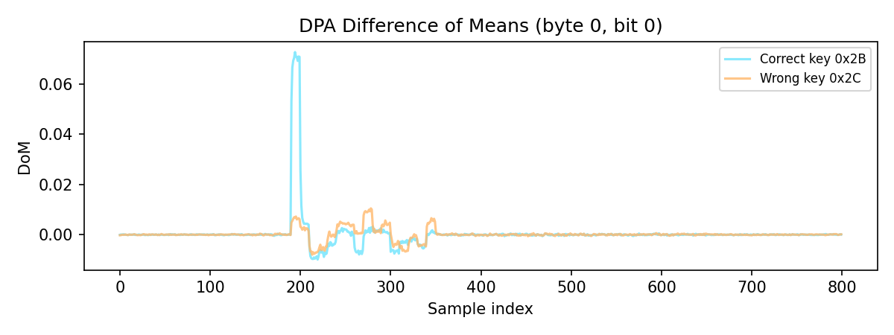
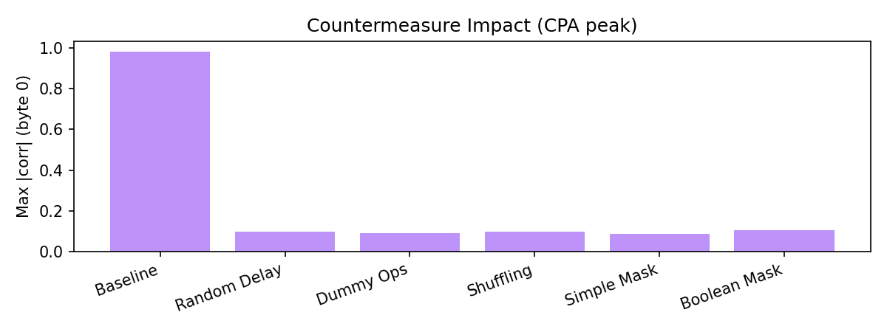

AES-128 · CPA · DPA
Side-Channel Attacks on AES-128
From Trace Collection to Key Recovery
Real plots generated from our dataset
Roadmap
- What is a side-channel?
- What are traces and how we collect them
- Hardware setup and alignment
- CPA and DPA math (definitions)
- Real plots from our dataset
- Countermeasures and impact
What is a Side-Channel?
Definition
Attacks that recover secrets from physical leakage, not the AES
math itself.
Key Idea
The implementation leaks during intermediate operations.
Power
EM Radiation
Timing
What is a Trace?
A trace is a time-series of power
samples captured while the device encrypts a plaintext.
- Each trace = one encryption
- Samples are indexed by time
- We compare traces across many encryptions
Trace Collection Pipeline
- Send plaintext to device
- Trigger ADC sampling
- Run AES encryption
- Capture samples
- Store plaintext + trace in CSV
Data Format
pt_byte_0..15, power_t0..power_tN
Hardware Setup
Key Requirements
- Stable power measurement path
- Consistent sampling window
- Low jitter in acquisition
Capture Method
External oscilloscope records the power waveform while a script
handles trigger/export.
Oscilloscope Capture (Alignment)
Trigger
GPIO trigger marks AES start for consistent timing.
Export
Capture script exports the waveform into CSV traces.
This keeps the same time window across traces and reduces jitter.
Key Recovery
Byte-by-Byte
Each AES key byte is recovered independently.
Why it Works
First-round S-Box depends on one plaintext byte and one key byte.
CPA: Leakage Model
Target the first round S-Box output:
\[ v = SBOX[p \oplus k] \]
Hamming Weight model:
\[ h_i = HW(v_i) \]
Definition
Hamming Weight counts 1-bits in a byte (0..8).
CPA: Pearson Correlation
For each key guess \( \hat{k} \), correlate predicted leakage with
measured traces.
\[ \rho = \frac{\sum_{i=1}^N (t_i - \bar{t})(h_i -
\bar{h})}{\sqrt{\sum_{i=1}^N (t_i - \bar{t})^2 \sum_{i=1}^N (h_i -
\bar{h})^2}} \]
Score each guess by \(\max_t |\rho(\hat{k}, t)|\).
CPA Result (Real Data)

Correct key shows a clear correlation peak at the S-Box timing.
DPA: Selection Function
DPA splits traces by one bit of the S-Box output:
\[ D(p_i, \hat{k}, b) = \text{bit}_b(SBOX[p_i \oplus \hat{k}]) \in
\{0,1\} \]
Two groups: \(S_1\) where bit=1 and \(S_0\) where bit=0.
DPA: Difference of Means
\[ \Delta(t) = \frac{1}{|S_1|}\sum_{i \in S_1} t_i(t) -
\frac{1}{|S_0|}\sum_{i \in S_0} t_i(t) \]
The correct key guess maximizes \(\max_t |\Delta(t)|\).
DPA Result (Real Data)

The correct guess creates a strong DoM peak.
Countermeasures
Random Delay
Dummy Operations
Shuffling
Simple Masking
Boolean Masking
Noise Injection
Countermeasure Impact (Real Data)

CPA peak drops under countermeasures (baseline vs protected
datasets).